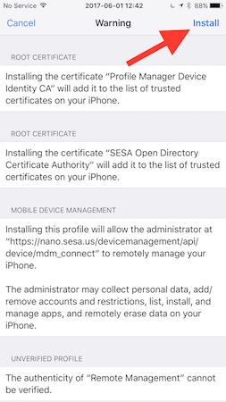

Please tap the following link from Safari on your iPhone:
You will see the following screen:
Log in with your SESA username and password. Your SESA username is usually the first part of your @sesafleetservices.com e-mail address.The passwords have all been set to "sesa1234" for now.
After logging in, you will see the following screen:
Tap on the "Enroll" button. You will be asked to install a profile for your phone:
Tap "Install" in the upper right corner. (You may be asked to enter your phone's passcode if you have one set.) You will then see a screen of details about the profile to be installed:
Tap "Install" in the upper right corner. A window will pop up asking you if you want to trust this profile.
Tap "Trust" and the profile will install. You will be taken back to the beginning screen once it installs.
There is one more trust profile to install, so now click on the "Profiles" tab.
Now tap the download arrow next to "Trust Profile for SESA". It will take you to an install screen.
Tap "Install" in the upper right corner. (You may be asked again to enter your phone's passcode if you have one set.)
The phone will slide up a button saying "Install". Tap the button to install the trust profile.
The phone will change to saying "Done" in the upper right corner once the profile is installed. Tap "Done".
At this point you have been signed up. Within a few minutes a notice will pop up on your phone telling you that SESA wants to install the OnSiteX app on your phone. Tap "Install" and the app will download and install. Once it is done, you will have an icon on your phone for "OnSiteX". Use this to run the app.
The first time you run the app, it will have you log in to the app. Use the same username and password that you used to log in to the website.
{kind=link}
{kind=link}
{kind=link}
{kind=link}
{kind=link}
{kind=link}
{kind=link}
{kind=link}
{kind=link}
{kind=link}
{kind=link}
{kind=link}